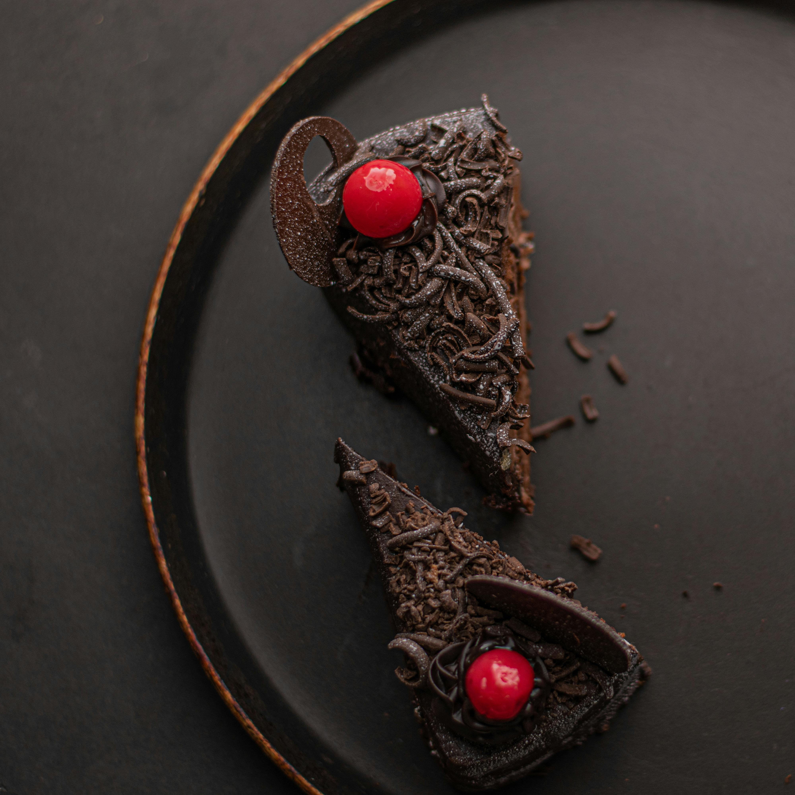
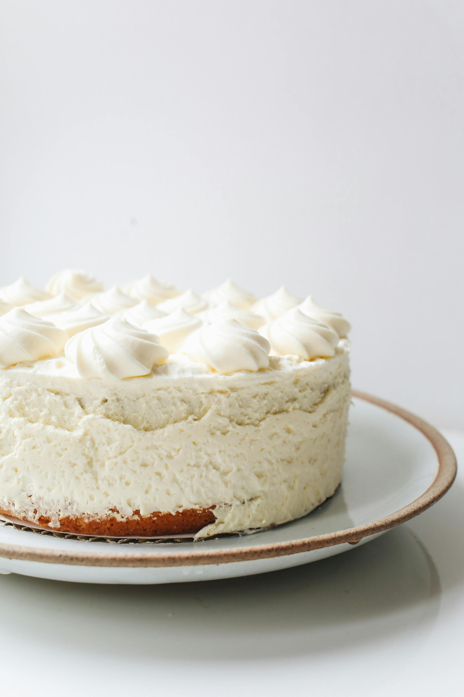

Chocolate Cake
Ingredients:
- 225g Flour, 350g Sugar, 75g Cocoa Powder
- 1.5 tsp Baking Powder, 1.5 tsp Baking Soda, 1 tsp Salt
- 2 Eggs, 240ml Milk, 120ml Vegetable Oil, 65g Butter, 2 tsp Vanilla
Procedure:
- Preheat oven to 180°C. Grease and line two 20cm pans.
- Whisk dry ingredients. Add eggs, milk, oil, and vanilla; beat for 2 mins.
- Stir in boiling water. Bake for 30–35 minutes.

Vanilla Sponge Cake
Ingredients:
- 4 Large Eggs, 120g Sugar, 120g Sifted Flour
- 1 tsp Vanilla Extract, 1/4 tsp Salt
Procedure:
- Preheat to 175°C. Beat eggs and sugar for 8 mins until thick (ribbon stage).
- Fold in flour gently by hand.
- Fold in hot milk and melted butter; bake for 25–30 mins.

Carrot Cake
Ingredients:
- 2 Cups Oil, 2 Cups Sugar, 1 Cup Brown Sugar, 4 Eggs
- 2 Cups Flour, 2 tsp Baking Soda, 1 tsp Cinnamon, 3 Cups Carrots
Procedure:
- Preheat to 175°C. Whisk wet ingredients.
- Sift in dry ingredients; fold in carrots and walnuts.
- Bake for 40–45 mins in a 9x13-inch pan.

Cheese Cake
Ingredients:
- 200g Biscuits, 100g Butter, 600g Cream Cheese
- 150g Sugar, 3 Eggs, 150ml Sour Cream, 1 tbsp Flour
Procedure:
- Preheat to 160°C. Press crust into a 23cm pan.
- Beat cheese and sugar; add eggs one by one. Mix in sour cream.
- Bake 50–60 mins. Cool slowly in the oven with the door open.

Red Velvet Cake
Ingredients:
- 250g Flour, 300g Sugar, 1 tsp Baking Soda, 1 tbsp Cocoa
- 240ml Oil, 240ml Buttermilk, 2 Eggs, 2 tbsp Red Food Coloring
Procedure:
- Preheat to 175°C. Whisk dry ingredients.
- Combine wet ingredients and gradually add to dry.
- Divide into two 9-inch pans and bake for 30–35 mins.

Lemon Cake
Ingredients:
- 250g Flour, 200g Sugar, 1 tsp Baking Powder, 1 tbsp Lemon Zest
- 240ml Milk, 120ml Oil, 2 Eggs, 2 tbsp Lemon Juice
Procedure:
- Preheat to 175°C. Whisk dry ingredients and lemon zest.
- Mix wet ingredients and combine until smooth.
- Bake in two 9-inch pans for 30–35 mins.